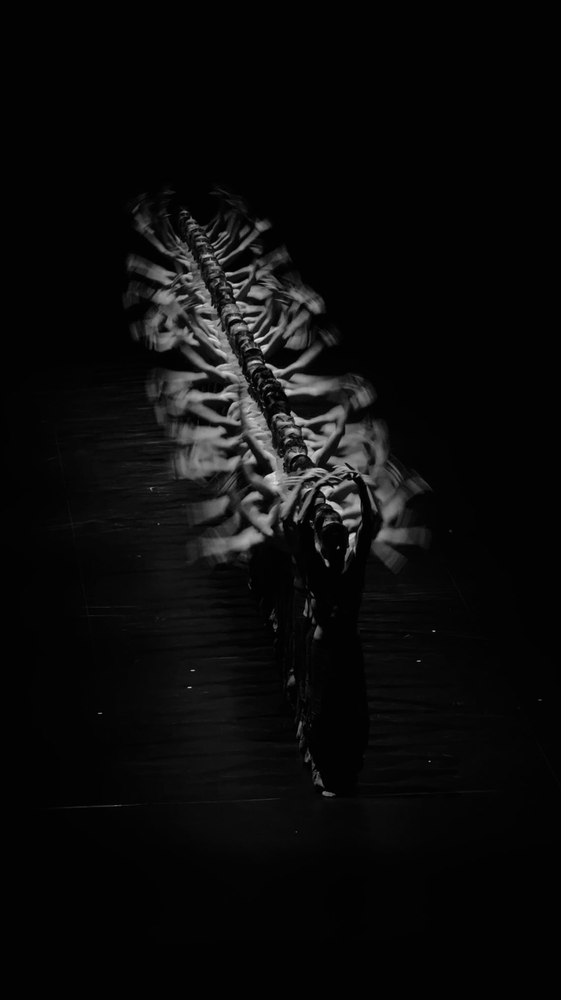

One Dancer, a Thousand Bodies — Ensemble Choreography from Herd Physics
Try It — Action Sketch
Capture 5 minutes of one dancer with FreeMoCap (2–3 webcams), retarget to a Blender rig, and generate 20 variants of each phrase with HY-Motion prompts Have Claude write a Blender script: 200–1,000 instances on a lattice, each with an Ising spin (which phrase or facing to adopt) updated by neighbor coupling, plus boids spacing; expose temperature as a driver on a gamepad axis Render a 90-second piece where you drop temperature through the critical point live, then add PPF cloth to a 50-body subset for the hero shot Falsifier: if viewers describe it as a screensaver or particle effect rather than a crowd of people with intention, the herd score isn't carrying meaning
Connected Posts (9)



Prompt system — run this yourself
Pasteable into Claude Code, Claude, or any agent. One-shot for the whole result, step prompts when you want to steer. Every step carries its own audit; the gap audit makes the agent find and fill what it missed.
Mission. Produces a 90-second ensemble piece in Blender where 200 to 1,000 bodies perform one dancer's captured phrases, and the choice of phrase and facing for each body is governed by an Ising or Potts herding model whose temperature the artist drops live through the critical point on a gamepad axis. The pipeline runs from FreeMoCap capture, through HY-Motion text-to-motion variants, a verified Ising simulation, Blender instancing with boids spacing, to a PPF cloth hero shot. Done means a rendered piece, a validated physics core, and a blind viewer test answering the falsifier: do viewers see a crowd of people with intention, or a screensaver?
1 · Deeper, not bigger
- What a top professional would do (that you didn't ask for): A choreographer would treat the model as a score, not an effect: they would decide which dramatic moments the phase transition must land on, rehearse the temperature curve like a conductor, and keep a small number of distinct phrases so the eye can read unison versus dissent. A technical director would verify the physics before art-directing it, reproducing the known Ising critical temperature and magnetization curve, and would budget the scene so 1,000 animated bodies render on time, using instanced baked actions rather than 1,000 armatures. Both would study Crystal Pite's The Seasons' Canon frame by frame to extract the actual grammar: canons that ripple across the group, sudden unison, small dissenting groups, and the floor pattern of the mass.
- Rawest material to start from: Five minutes of the dancer captured with FreeMoCap (freemocap.org, 2 to 3 webcams, ChArUco calibration) and the raw 3D landmark output; Tencent HY-Motion 1.0 weights on Hugging Face; the Ising model in Onsager's 1944 solution and standard Metropolis or Glauber dynamics references; the source Ising market visualization and the shepherd-dog simulation's pressure force F=(1-d/R)^1.2 plus boids rules; ZOZO's ppf-contact-solver repo (github.com/st-tech/ppf-contact-solver) with its Blender plugin; Ian Hubert's driver and scripted-expression technique for live control; and recordings of Crystal Pite's The Seasons' Canon (Paris Opera Ballet, 2016) for structural analysis.
- Methods and tools: FreeMoCap with its Blender export add-on; retargeting to a Rigify or Mixamo-style rig; HY-Motion prompted for phrase variants, then filtered for foot sliding and joint limits; NumPy Ising or q-state Potts on a 2D lattice with Glauber updates, temperature in units of J, checked against Tc of about 2.269 for q=2; boids separation with the pressure-field falloff for spacing; Blender Python and Geometry Nodes 'Instance on Points' with per-instance action and time offset, or NLA strips on a few hero rigs; a modal operator reading gamepad input (XInputReader on Windows, the inputs or evdev Python package on Linux) into a custom property that drives temperature; headless rendering with blender -b -a in EEVEE for drafts and Cycles for finals; FFmpeg for assembly; ppf-contact-solver for cloth on 50 hero bodies.
- What proves it right: The Ising core reproducing Onsager's spontaneous magnetization curve within 5% on a 128 by 128 lattice and a susceptibility peak near T of about 2.27. A blind viewer test with at least 15 people who describe the piece in free text, coded for crowd-of-people versus particle or screensaver language, compared against a boids-only control render. A dancer or choreographer reviewing whether the motion reads as intentional. A frame-time log proving the scene renders at the target resolution in the planned time.
Rewritten prompt — ask for exactly that:
Act as a technical director and choreographer's assistant. Build a 90-second Blender ensemble piece from one dancer. Step one: give me a FreeMoCap capture plan for 5 minutes of four distinct phrases with 2 to 3 webcams and ChArUco calibration, then a retarget into a Blender rig with foot-contact cleanup. Generate 20 variants per phrase with HY-Motion 1.0 and reject variants with foot sliding over 2 cm or joint angles out of range. Write a NumPy q-state Potts model on a 2D lattice with Glauber dynamics; verify the q=2 case reproduces Onsager magnetization within 5% and a susceptibility peak near T of 2.27 before using it. Map each lattice site to a body: the spin chooses which phrase and facing the body performs, synchronized to musical counts. Add boids separation with pressure falloff (1-d/R)^1.2 for spacing. In Blender, instance 200 to 1,000 bodies with Geometry Nodes using baked actions and per-instance time offsets; drive temperature from a gamepad axis via a modal operator and a custom property, recording the curve as keyframes. Render a 90-second piece dropping temperature through the critical point at a chosen musical moment, plus a boids-only control. Add ppf-contact-solver cloth to a 50-body subset for one hero shot. Then run a blind viewer test of 15 or more people on both renders and code their descriptions.
2 · One-shot prompt
ROLE AND STANCE You are a technical director working with a choreographer. You will turn one dancer's captured motion into ensemble choreography for hundreds of bodies, using a herding model from statistical physics as the score. Source claims to test: Crystal Pite's ensembles move 'as a single organism'; FreeMoCap gives professional markerless capture from ordinary webcams; HY-Motion 1.0 generates skeleton animation from text across 200+ action types; the Ising market visualization shows random behavior at high temperature and sudden cluster formation as social pressure rises; ppf-contact-solver gives penetration-free cloth at scale with a Blender plugin; an LLM can write the whole Blender scene as Python. CONTEXT - Capture: FreeMoCap, 2 to 3 webcams, ChArUco board, Blender export add-on. - Motion variants: HY-Motion 1.0 on Hugging Face. - Score: q-state Potts (q equals number of phrases) or Ising for two facings, Glauber dynamics; boids spacing with pressure falloff (1-d/R)^1.2 from the shepherd simulation. - Scene: Blender Python, Geometry Nodes instancing, drivers and scripted expressions in the Ian Hubert style, gamepad via a modal operator. - Hero shot: ppf-contact-solver on a 50-body subset. - Output: EEVEE drafts, Cycles finals, FFmpeg assembly. HARD CONSTRAINTS 1. The physics core must reproduce known Ising results before any art direction. 2. The dancer consents in writing to capture and to use of their motion; credit them. 3. Every body's motion derives from the captured dancer or a filtered variant; no stock mocap. 4. Spin updates are quantized to musical counts so phrase switches land on beats. 5. A boids-only control render with identical bodies, phrases and camera is produced for the viewer test. DELIVERABLES IN ORDER 1. capture/: protocol, calibration files, raw FreeMoCap output, retargeted actions per phrase. 2. variants/: HY-Motion variants with the filter report (foot slide, joint limits). 3. ising/: simulation code, validation plots (magnetization versus T against Onsager, susceptibility peak), and a function returning spin fields over time for a temperature curve. 4. blender/: scene-building script, Geometry Nodes setup, gamepad modal operator, recorded temperature curve. 5. renders/: the 90-second piece, the boids-only control, and the cloth hero shot, with frame-time logs. 6. viewer_test.md: protocol, raw responses, coding scheme, results. 7. verdict.md with GAPS. BUILT-IN GAP ANALYSIS Write GAPS: phrases with capture artifacts; HY-Motion variants rejected and why; whether the critical slowing near Tc made transitions too slow on screen; render compromises (body count, resolution); claims you could not test. Fill gaps you can, for example adjusting lattice size or update rate so the transition reads in under four bars, and note the change. SELF-QUESTIONS - Which moments in the music must the transition land on, and does the temperature curve put them there? - Do four phrases read as distinct from a wide shot, or do they blur? - Does the lattice neighborhood match how dancers actually cue each other (sight lines, nearest neighbors in front)? - Is the transition near Tc too slow or too noisy to read as a decision? - Would viewers see intention because of the dancer's motion alone, which the control render would also show? STOP CONDITIONS Stop and report if the Ising validation fails, if capture yields fewer than three usable phrases, or if 200 bodies cannot render under 2 minutes per frame in Cycles on the available GPU. RETURN FORMAT Falsifier verdict from the viewer test, file list, validation plot paths, render paths, GAPS, self-question answers.
3 · Step-by-step prompts
Step 1 — Ground truth: capture the dancer and study the reference
Goal: Get clean motion of four phrases and the structural grammar of the reference work.
Write a FreeMoCap capture protocol: 2 to 3 webcams at 1080p 30 fps or higher, placed about 90 to 120 degrees apart, a printed ChArUco board for calibration, even lighting, fitted clothing, and a 3 by 3 m floor area marked with tape. The dancer performs four distinct phrases of 8 counts each to a click track, three takes each, plus a T-pose. Process with FreeMoCap, export to Blender via its add-on, retarget to one rig, clean foot contacts, and save one action per phrase. In parallel, analyze a recording of Crystal Pite's The Seasons' Canon: log in a table every moment of unison, canon (ripple across the group), dissent (a subgroup moving differently), and floor-pattern change, with timestamps. This table becomes the target grammar for the score. Get written consent from the dancer.
Expect: capture/ with calibration, raw output, four cleaned actions, and a reference grammar table of 20 or more events.
Audit before moving on: Play each action on the rig and fail any with foot sliding over 2 cm or limb flips; recapture or clean. Confirm the consent note exists.
Step 2 — Generate and filter motion variants
Goal: Multiply the dancer's vocabulary without losing their signature.
For each phrase, write HY-Motion 1.0 prompts that describe the phrase in plain movement language (for example 'a person sweeps the right arm overhead, turns half left, and drops into a low lunge') and generate 20 variants. Retarget variants to the same rig. Filter automatically: foot sliding over 2 cm during contact, joint angles beyond human range, root drift over 0.5 m from the original's path, and duration mismatch over 10% against 8 counts at the piece's tempo. Score each surviving variant by dynamic time warping distance to the captured phrase on joint rotations, keeping variants close enough to read as the same dancer but different enough to vary. Write a filter report with counts kept and rejected per reason.
Expect: variants/ with kept actions and a filter report, ideally 5 to 10 kept variants per phrase.
Audit before moving on: View a grid of kept variants beside the original; fail the phrase if fewer than three variants survive, and rewrite prompts using the dancer's own movement qualities.
Step 3 — Build and validate the Ising or Potts score
Goal: A physics core proven correct before it is art-directed.
Write ising/ in NumPy: a q-state Potts model on an L by L periodic lattice with coupling J equals 1 and Glauber or heat-bath updates, with q equals 2 for Ising. Validate q equals 2 on L equals 128: sweep T from 1.5 to 3.5, equilibrate 5,000 sweeps, measure 5,000 more, and plot magnitude of magnetization against Onsager's exact result (1 - sinh(2/T)^-4)^(1/8) below Tc, plus susceptibility with its peak near T of 2.27. Then write score(temperature_curve, counts, L, q, seed) returning a spin field per musical count, with sweeps per count adjustable so transitions read on screen within two to four bars. Add an external field term so the choreographer can bias toward a chosen phrase at climaxes. Save validation plots.
Expect: ising/ code, validation plots, a table of measured versus exact magnetization, and the score function with tests.
Audit before moving on: Fail if magnetization deviates from Onsager by more than 5% at any T below 2.1 or if the susceptibility peak lies outside 2.2 to 2.35. Fix the update rule before continuing.
Step 4 — Blender scene, spacing and gamepad temperature
Goal: Put hundreds of bodies on stage, driven by the score and a live temperature knob.
Write a Blender Python script that builds the scene: a lattice of 200 to 1,000 points, each a body instanced with Geometry Nodes from a collection of baked phrase actions, with per-instance action choice and time offset read from the spin field and facing from a second Ising layer. Add boids separation in a pre-pass that offsets positions with force (1-d/R)^1.2 inside radius R so bodies never overlap. Write a modal operator that reads a gamepad axis (evdev or inputs on Linux, XInputReader on Windows) into a scene custom property 'temperature', and wire it with a driver into the score; record the live curve as keyframes so renders are reproducible. Light and stage camera to read floor pattern from above and unison from a low angle. Render an EEVEE draft at 720p.
Expect: blender/ with the build script, Geometry Nodes group, modal operator, and a draft render plus frame-time log.
Audit before moving on: Check no two bodies intersect in any frame by a bounding-sphere test. Fail if phrase switches land between counts or if draft frame time exceeds 10 s at 500 bodies.
Step 5 — Perform, render the piece, the control and the cloth hero shot
Goal: Produce final renders including the comparison arm.
Perform the temperature curve live on the gamepad against the music, aiming the critical drop at the moment you chose from the reference grammar table, and record it. Render the 90-second piece in Cycles at 1080p headless with blender -b -a, logging frame times. Render the control: same bodies, phrases, camera and music, but phrase choice from boids neighbor-averaging with no temperature or phase transition. Then take a 50-body subset for the hero shot, apply garments with ppf-contact-solver through its Blender plugin, simulate, and render 8 to 10 seconds. Assemble with FFmpeg, including the control as a separate file with identical length and audio. Log any penetration warnings from the solver. Keep the piece and control renders at identical resolution, samples and color management so viewers judge motion only.
Expect: renders/ with the piece, the control, the hero shot, frame-time logs and solver logs.
Audit before moving on: Fail if the control differs from the piece in anything but the choice rule. Inspect the hero shot for cloth penetration; fail on visible clipping.
Step 6 — Validate against oracles and write the gap report
Goal: Run the blind viewer test and answer the falsifier.
Show at least 15 viewers the piece and the control in random order, unlabeled. Ask each to describe each video in one or two sentences before any other question. Code responses blind into categories: crowd of people with intention, particles or screensaver, unclear. Report counts per video and a sign test or McNemar test on paired responses. Ask the dancer and, if possible, a choreographer to review the piece for whether the dancer's signature survives and whether the transitions read as choices. Write verdict.md: viewer results, reviewer notes, Ising validation summary, render stats, and the falsifier verdict. Then GAPS: each source claim (single-organism ensembles, FreeMoCap quality, HY-Motion variety, Ising herd transitions, PPF no clipping, LLM-written Blender scenes) marked verified, unverified or false with evidence.
Expect: viewer_test.md with raw responses and coding, verdict.md with the falsifier line and GAPS.
Audit before moving on: Have a second coder recode responses blind and report agreement; fail if under 80% and reconcile. Fail if viewers saw labels or the hypothesis before describing.
4 · Gap analysis and audit
You are an independent reviewer of a herd-physics ensemble choreography project. Open capture/, variants/ and the filter report, ising/ with validation plots, blender/, renders/ with logs, viewer_test.md and verdict.md. List every claim in verdict.md and mark each verified (cite plot, log, or response data), unverified (say what would prove it), or false. Check: Ising validation matches Onsager within 5% and the susceptibility peak is near 2.27; the score quantizes switches to counts; the control render differs only in the choice rule; no bodies intersect; cloth has no visible penetration; viewers saw videos unlabeled and described before being questioned; coding was blind with a second coder; the dancer's consent and credit exist. List missing pieces: phrases dropped, variants rejected, render compromises, untested body counts. Rank problems by whether they could flip the falsifier verdict, fix the top three now (for example recoding responses or re-rendering a mismatched control), and report before and after. End with what needs more viewers, a second dancer, or more GPU time to settle.
Questions the agent must ask itself before it says done:
- Which musical moment must the critical transition land on, and did my recorded temperature curve hit it?
- Are four phrases readable as distinct from the wide shot?
- Does a square-lattice neighborhood match how dancers cue each other, or should neighbors be by sight line?
- Near Tc, does critical slowing make the transition drag on screen?
- Does the external field term let me force unison at a climax without it looking scripted?
- Is the dancer's signature still visible after HY-Motion variants and instancing?
- Would viewers call the control a crowd too, meaning the herd score adds nothing?
- Do 1,000 bodies render in my time budget, or must I settle for 300 with depth tricks?
- Did I credit the dancer and get consent for every use of their motion?
5 · What proves it right
- Onsager's exact spontaneous magnetization curve, reproduced within 5% on a 128 by 128 lattice, with a susceptibility peak near T of 2.27.
- A blind viewer test of at least 15 people comparing the piece to a boids-only control, with free-text descriptions coded by two blind coders.
- Review by the captured dancer and, where possible, a choreographer on intention and signature.
- Bounding-sphere intersection checks and ppf-contact-solver logs showing no body or cloth penetration.
- Headless Blender render logs proving the 90-second piece renders end to end.
6 · Failure modes
- Screensaver read: viewers describe particles. Tell: free-text uses 'swarm', 'flock', 'particles'. Fix: fewer, more distinct phrases, slower transitions, camera closer to bodies.
- Wrong physics: transition happens at the wrong temperature or never. Tell: validation plot misses Onsager. Fix: correct the update rule and boundary conditions before art direction.
- Off-beat switching: bodies change phrase mid-count. Tell: visual stutter. Fix: quantize spin reads to musical counts.
- Variant drift: HY-Motion variants no longer look like the dancer. Tell: DTW distance high and the dancer does not recognize them. Fix: tighter prompts, keep closer variants.
- Render budget blowout: 1,000 armatures choke Blender. Tell: draft frame time over 10 s. Fix: Geometry Nodes instancing of baked actions, hero rigs only up close.
- Cloth clipping on the hero shot. Tell: solver warnings or visible penetration. Fix: tighten strain limits, increase substeps, reduce body count.
7 · Agent direction (unattended runs)
Validate the Ising core first in plain NumPy; it is fast, and nothing else matters if it is wrong. Then build the Blender pipeline headless with blender -b and Python scripts, caching baked actions and spin fields to disk so renders are reproducible. Spawn one sub-agent for HY-Motion generation and filtering while another builds the Blender scene against placeholder actions; review the filter report and an intersection test yourself. Capture, the live gamepad performance and the viewer test involve people: write protocols and wait for the user's data, never invent viewer responses or the dancer's consent. Stop and ask if the GPU cannot meet the render budget at 200 bodies, if capture yields fewer than three usable phrases, or before showing the dancer's motion publicly. Return verdict.md as the entry point with capture/, variants/, ising/, blender/, renders/ and viewer_test.md.
Prompt system updated 2026-10-22 · all prompt systems · JSON